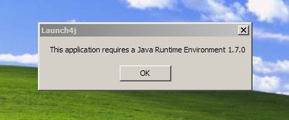
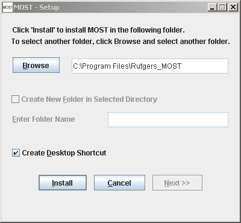
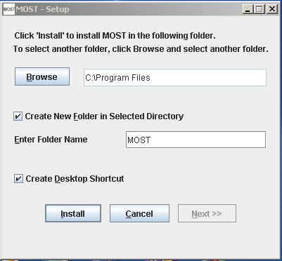
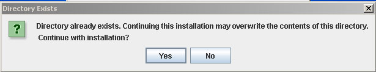
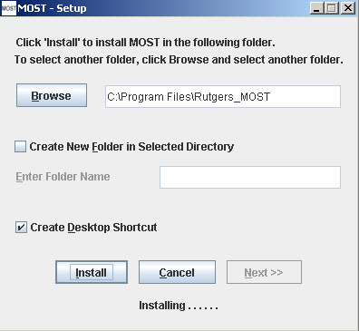
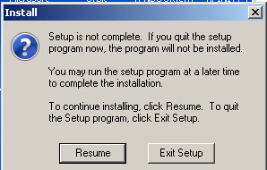
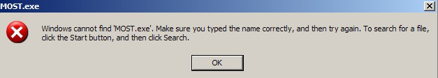

Metabolic Optimization and Simulation Tool
|
Help Topics Installing MOST
|
Installing MOST Java JRE 1.7. java.com/download. Gurobi jar file and license. www.gurobi.com if FBA or GDBB are to be run. Extract MOSTInstaller.zip, then double-click on MOSTInstall.exe file. If Java JRE 1.7 is not installed, a message will appear. Click OK, and a web browser will open to install Java.  Otherwise,the installer will open. The default install path will be filled in the Browse for installation folder text area.  If the folder in the Browse for installation folder text field does not exist, create a new folder option will be disabled. In order to create a new folder, browse for an existing directory, such as Program Files, then check the “Create New Folder in Selected Directory” check box, and type the name of the folder into the “Enter Folder Name” text area.  If the installation directory already exists, a message will appear.  Click Install. The Installing message will appear:  If the frame close “X” button is clicked at any time, the message below will appear:  If this dialog is displayed after MOST has been installed, but Gurobi has not yet been set up, it is not necessary to run the installer again. Simply run MOST from the desktop icon or installation location (double-click MOST.exe) and the Gurobi Jar Path dialog will be displayed. If MOSTInstaller.exe is run from a flash drive, the following error may be encountered when the Next button is clicked:  Click OK. Then open MOST as described above to set up Gurobi. The installation of MOST was successful. Download MOST for Linux, and extract the gzip compressed file. MOST can be run from the command line using the java command "java -jar MOST.jar" from the directory where the gzip was uncompressed. (not yet tested) |